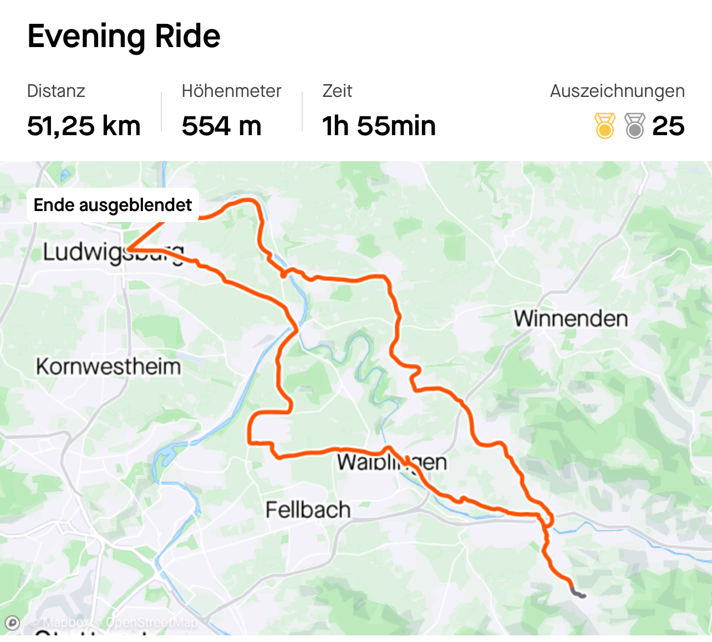
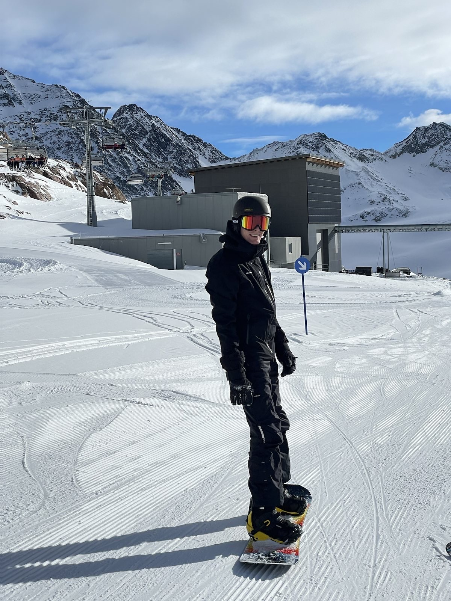
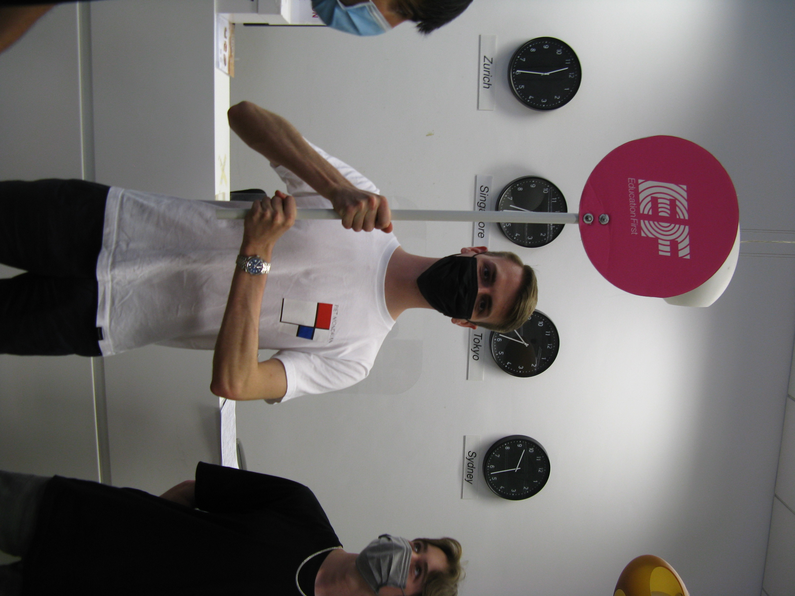

More About Me
Hobbies
My interests outside of university and work are spread over a broad are. In 2020 I got myself a racing bike and used the time during the lockdown to cover as many kilometers as possible. I discovered I liked cycling way more than athletics, which I did previously. I sadly didn’t bring my bike with me when moving to Ireland, but I’m really looking forward to again start cycling more this summer.
Apart from cycling I also love snowboarding. Since a young age I went skiing with my parents and especially during the last few years I tried to carve out as much time as possible during winter to hit the slopes. I started snowbaording at 16 and I went every year since then. It is definitely the highlight of my winters.
Outside of sports I also like to travel. In the recent years I had the opportunity to see a lot of different parts of the world. I love to experience the local culture, try the local food and enjoy the scenery. I believe traveling is a privilege, that can give you a different view on the world. It also allows me to pursue free diving and snorkeling, which is rather unspectacular in Germany


In the same way my fascination for cars influenced me in my career goals this fascination is also present in my hobbies. I am a huge Formula 1 fan (sadly a Ferrari fan) since a long time. Even getting up early on the weekends, to watch races in different time zones, is part of that. I also travelled to a few Formula 1 races and I really enjoyed that experience.

Volunteering
During my school time I assisted with the schools tutoring program. I assisted students from lower grades with their homework in subjects ranging from english, to maths, to history. This work helped me to discover my passion for helping other people and allowed me to develop my explaining skills. It is not as easy as I originally thought, to explain a topic you fully understand to somebody who has little to no knowledge of said topic. This opportunity of tutoring was only awarded to highly skilled students, a teacher needed to recommend you for it. Being entrusted with this task also gave me motivation to stay on top of my school work. It was very nice to get the recognition for your hard work, and at the same time being able to help other students who might struggle a bit in certain topics
Outside of school I started volunteering as a youth coach in my athletics club. Once every week I helped with coaching a group of children across various disciplines in athletics. This was a fun experience as the training at that level is not at such a competitive level yet and the main focus of my work was to engage the children and keep their interest in athletics. It was really nice to see how some of the children you coached stayed with the club and still recognised you years later. When I started university I stopped with this volunteer work.
Language Experience
In 2022 I decided I want to switch from the German-Chinese double degree, but I still wanted to advance my chinese knowledge. I decided to do a language course in Singapore over the span of four months. This was one of the best experiences of my life. Spending so much time in one country really is different than travelling there to spend your holidays. I lived with a host family, to which I still have contact today. I also really liked being immersed in the language. The previous two years I only had online classes and still lived in Germany. There where not too many situations in which I could practise my chinese in a natural setting. In Singapore I could speak chinese with my host family, the taxi drivers, in restaurants and with chinese students in my language school, which where in Singapore to study english.
Singapore also is just an overall great place to experience. It is by far the cleanest and safest city I experienced. However, there is a saying from the locals: Singapore - a Fine city. The reason behind this cleanliness and safety are very strict rules. Living in Singapore for a prolonged time might not be for me, but the four months I spend there where really great.